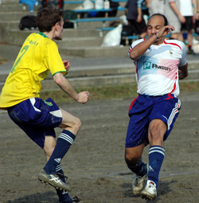

|
Oi Futo, Sun 29th Oct. The muddy field of Oi was not the best time for Lions to unveil their new white kit or even play after a 6 week absence.
Lions again were missing some crucial players, this time the back four! Defensive midfielders filled in for the defence, and some confidence was inspired by the debut of the experienced keeper Mike.
10 minutes into the game, Lions fell victim to a clever quick free-kick by Shane, playing their winger onside, who stepped into the 18 yard box and unleashed a venomous shot to the right of the keeper, who had no chance. Another good move saw Shane’s talented striker head wide from 6 yards out. This wasn’t enough to wake the Lions, until another good move a few minutes later, saw Shane tap in from close range again with Mike helplessly scampering to the ball.
2-0 down after 15 minutes looked like another Lions vs BEFC game in the making. However, the second goal woke up the sleeping beast the Lions are renowned for. A crowd of over 25 people (12 Lions supporters) looked surprised on the sudden change in style and quick and sexy moves that Lions put together before Omar Birkiya had a first dipping shot on goal from 20 yards out, which the keeper made an excellent dive to save.
Gaafar Somi (Captain) was playing for the first time upfront as a striker, and looked dangerous on a couple of occasions before he slotted home from close range, AbuBakar Birkiya’s perfect through ball. A. Birkiya was provider again when his corner kick fell at the far post to Ken who headed calmly into the top corner making it 2-2 on 30 minutes.
Another debutant Jamil Kuta (Uganda), playing out of position in defence, dribbled past players to slot past the keeper from 8 yards to make it 3-2 to Lions just before half-time, minutes after Atta’s left side cross rattled the cross-bar.
Just after half-time, Hussein’s ball over the top found Gaafar who could’ve had his second after overtaking the defender and going past the keeper but hit the side-netting from a tight angle.
Minutes later, Gaafar did have his second goal, slotting confidently beyond Shane’s keeper to make it 4-2, this was minutes after an appeal for a PK on the other end of the pitch was waved away by the referee. Lions then had the only change of the game that saw Bashaar who dictated the pace of the game in the midfield make way for Haitham.
Shane had rare counter attacks that were professionally absorbed by Sima and Akira who seemed to be the only infield players to remain in the Lions half of the pitch with most of the pressure being on Shane’s end. Lions kept probing, and a 50-50 ball saw Hussein clash with Shane’s keeper, who fell awkwardly, injuring his foot and rolling in pain. Shane had no substitutes, so following the keeper’s exit; an infield player went in goal, only to make some brilliant saves, as well as watch a shot from Gaafar skim the post.
With 5 minutes to go, A. Birkiya, dribbling as usual into the area, caused Shane’s defender to slip, and as Birkiya tried to go past, the defender scooped the ball with his hand, resulting in a penalty.
A. Birkiya took an overly confident penalty, where he tamely slotted the ball low and centrally with the keeper leaping to the left to agonisingly watch the ball roll into the net.
Lions did miss bite in their first TML outing, but with performances like this, Shane won’t be the last prey!
Man of the Match: Jamil and Gaafar (tied)
Report by Hussein Shehata
|